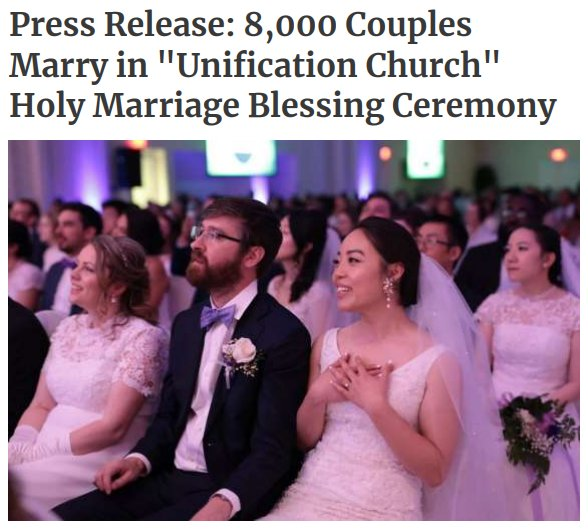

2023
Ett nytt "Cheon Il tempel" skall stå fördigt i Korea maj 2023
Världen:
8 jan 2023 Attack mot Brasiliens regeringssäte i Brazilia, liknande stormningen av USA:s Capitolium den 6
januari 2021.
Jair Bolsonaro, den högerextrema före detta presidenten i Brasilien, hade i månader försökt undergräva
resultatet av ett val som han förlorade, ungefär på samma sätt som Donald J. Trump gjorde efter sitt
nederlag i presidentvalet 2020.
jan 2023 Turkiet utfördade på lördagen 29jan, en avrådan från resor till USA och Europa, rapporterar
nyhetsbyrån AFP. USA och flera europeiska länder, däribland Sverige, har tidigare utfördat liknande avrödan
för resor till Turkiet.
Det turkiska utrikesdepartementet skriver i varningen att det förekommer "farliga nivåer av religiös
intolerans och hat" i Europa och att utlänningar utsätts för "verbala och fysiska attacker" i USA, enligt
AFP.
4 febr - 62:a Great Works i Cheon Pyeong Korea. Hålls 4 ggr. per år. Himlens välsignelse över "Wishing papers."
Världen: En oavbruten "väckelse"-bön i Kentucky blir viral på TikTok, och människor reser tusentals
km för att delta.
Sammankomsten har pågått 24 timmar om dygnet i en liten kristen högskola.
fredagen 5 maj - Vär svenske broder Roger gick över till andevärlden idag på förmiddagen.
Roger var på 70-talet en av de bästa FR (fundraisers) i Californien
7 maj Hyojeong Cosmic Blessing Festival 2023

Blessing i Las Vegas USA
måndagen 15 maj - Finske broder Lenni Hassinen gick över till andliga världen
Lenni var en av de första att studera på seminariet UTS-Unification Theological Seminary i USA.
Lenni missionerade flera år i Estland på 90-talet.
Beslut om att sälja Belvedere i USA. Belvedere var hem för Sanna föräldrar under deras tid i USA.
Danmark Måndagen den 11 september brev från Kyrkodepartementet med glädjande besked, att de har beslutat att ge
FFWPU Danmark juridisk status som "erkänd religiös gemenskap". Det är exakt 2 år sedan vi lämnade in ansökan om
det. Tack för alla era böner och stöd.
Detta startar förhoppningsvis ett nytt kapitel för vårt religiösa samfund i Danmark, där vi kan ses på med
öppnare och objektivare ögon och lättare kan bygga en mer konstruktiv, öppen och ömsesidig respektfull relation
med andra religiösa samfund, media osv.
Likaså kan det förhoppningsvis också ge fler privatpersoner mer lust och nyfikenhet att kontakta oss och studera
vär tro och gärning. /Lars Neergard
sept - Joseph 2:a gen. avlider i Spanien.
Sanna mors ord 11 nov 2023
25 nov fru Cheong Dae-hwa (hustru till president Young Hwi Kim, 80-talets europa ledare) himmelsförd.